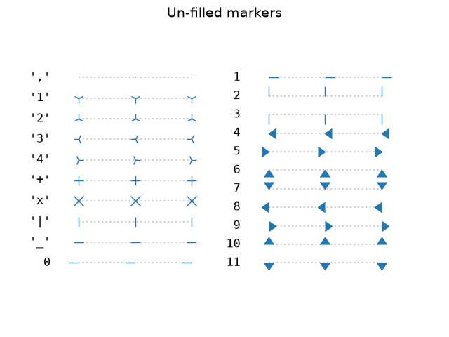
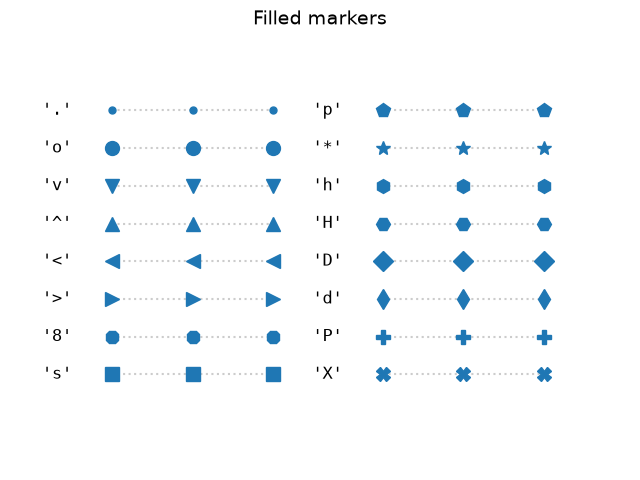
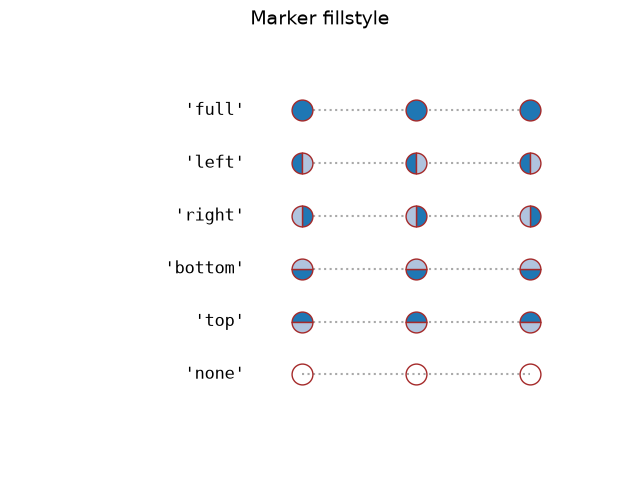
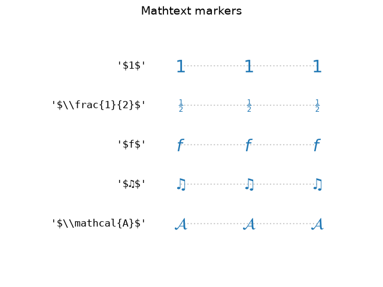
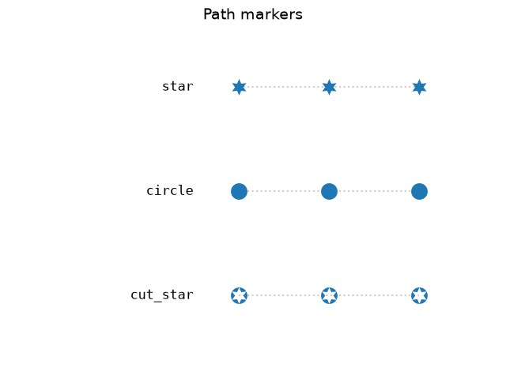
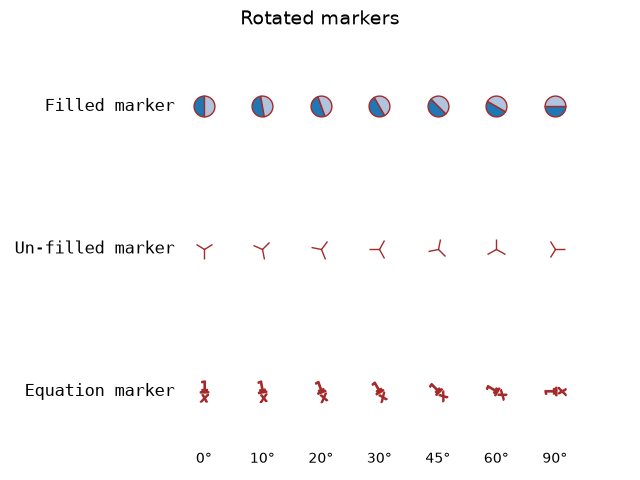
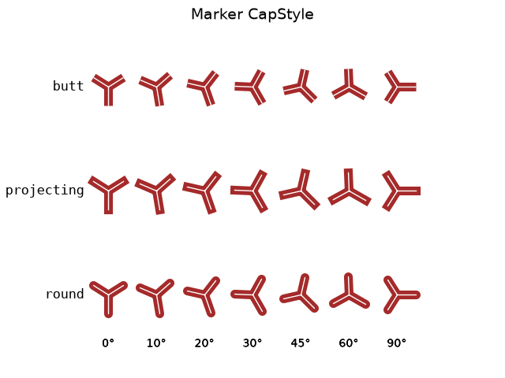
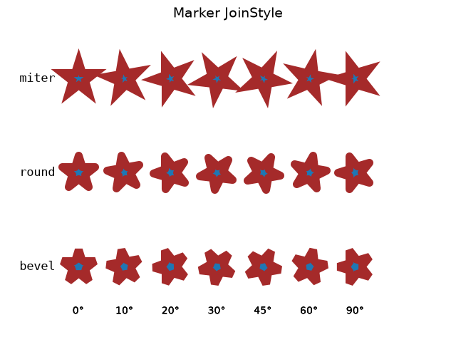

Note
Go to the end to download the full example code.
Marker reference#
Matplotlib supports multiple categories of markers which are selected using
the marker parameter of plot commands:
For a list of all markers see also the matplotlib.markers documentation.
For example usages see Marker examples.
import matplotlib.pyplot as plt
from matplotlib.lines import Line2D
from matplotlib.markers import MarkerStyle
from matplotlib.transforms import Affine2D
text_style = dict(horizontalalignment='right', verticalalignment='center',
fontsize=12, fontfamily='monospace')
marker_style = dict(linestyle=':', color='0.8', markersize=10,
markerfacecolor="tab:blue", markeredgecolor="tab:blue")
def format_axes(ax):
ax.margins(0.2)
ax.set_axis_off()
ax.invert_yaxis()
def split_list(a_list):
i_half = len(a_list) // 2
return a_list[:i_half], a_list[i_half:]
Unfilled markers#
Unfilled markers are single-colored.
fig, axs = plt.subplots(ncols=2)
fig.suptitle('Un-filled markers', fontsize=14)
# Filter out filled markers and marker settings that do nothing.
unfilled_markers = [m for m, func in Line2D.markers.items()
if func != 'nothing' and m not in Line2D.filled_markers]
for ax, markers in zip(axs, split_list(unfilled_markers)):
for y, marker in enumerate(markers):
ax.text(-0.5, y, repr(marker), **text_style)
ax.plot([y] * 3, marker=marker, **marker_style)
format_axes(ax)

Filled markers#
fig, axs = plt.subplots(ncols=2)
fig.suptitle('Filled markers', fontsize=14)
for ax, markers in zip(axs, split_list(Line2D.filled_markers)):
for y, marker in enumerate(markers):
ax.text(-0.5, y, repr(marker), **text_style)
ax.plot([y] * 3, marker=marker, **marker_style)
format_axes(ax)

Marker fill styles#
The edge color and fill color of filled markers can be specified separately.
Additionally, the fillstyle can be configured to be unfilled, fully
filled, or half-filled in various directions. The half-filled styles use
markerfacecoloralt as secondary fill color.
fig, ax = plt.subplots()
fig.suptitle('Marker fillstyle', fontsize=14)
fig.subplots_adjust(left=0.4)
filled_marker_style = dict(marker='o', linestyle=':', markersize=15,
color='darkgrey',
markerfacecolor='tab:blue',
markerfacecoloralt='lightsteelblue',
markeredgecolor='brown')
for y, fill_style in enumerate(Line2D.fillStyles):
ax.text(-0.5, y, repr(fill_style), **text_style)
ax.plot([y] * 3, fillstyle=fill_style, **filled_marker_style)
format_axes(ax)

Markers created from TeX symbols#
Use MathText, to use custom marker symbols,
like e.g. "$\u266B$". For an overview over the STIX font symbols refer
to the STIX font table.
Also see the STIX Fonts.
fig, ax = plt.subplots()
fig.suptitle('Mathtext markers', fontsize=14)
fig.subplots_adjust(left=0.4)
marker_style.update(markeredgecolor="none", markersize=15)
markers = ["$1$", r"$\frac{1}{2}$", "$f$", "$\u266B$", r"$\mathcal{A}$"]
for y, marker in enumerate(markers):
# Escape dollars so that the text is written "as is", not as mathtext.
ax.text(-0.5, y, repr(marker).replace("$", r"\$"), **text_style)
ax.plot([y] * 3, marker=marker, **marker_style)
format_axes(ax)

Markers created from Paths#
Any Path can be used as a marker. The following example shows two
simple paths star and circle, and a more elaborate path of a circle with
a cut-out star.
import numpy as np
import matplotlib.path as mpath
star = mpath.Path.unit_regular_star(6)
circle = mpath.Path.unit_circle()
# concatenate the circle with an internal cutout of the star
cut_star = mpath.Path(
vertices=np.concatenate([circle.vertices, star.vertices[::-1, ...]]),
codes=np.concatenate([circle.codes, star.codes]))
fig, ax = plt.subplots()
fig.suptitle('Path markers', fontsize=14)
fig.subplots_adjust(left=0.4)
markers = {'star': star, 'circle': circle, 'cut_star': cut_star}
for y, (name, marker) in enumerate(markers.items()):
ax.text(-0.5, y, name, **text_style)
ax.plot([y] * 3, marker=marker, **marker_style)
format_axes(ax)

Advanced marker modifications with transform#
Markers can be modified by passing a transform to the MarkerStyle constructor. Following example shows how a supplied rotation is applied to several marker shapes.
common_style = {k: v for k, v in filled_marker_style.items() if k != 'marker'}
angles = [0, 10, 20, 30, 45, 60, 90]
fig, ax = plt.subplots()
fig.suptitle('Rotated markers', fontsize=14)
ax.text(-0.5, 0, 'Filled marker', **text_style)
for x, theta in enumerate(angles):
t = Affine2D().rotate_deg(theta)
ax.plot(x, 0, marker=MarkerStyle('o', 'left', t), **common_style)
ax.text(-0.5, 1, 'Un-filled marker', **text_style)
for x, theta in enumerate(angles):
t = Affine2D().rotate_deg(theta)
ax.plot(x, 1, marker=MarkerStyle('1', 'left', t), **common_style)
ax.text(-0.5, 2, 'Equation marker', **text_style)
for x, theta in enumerate(angles):
t = Affine2D().rotate_deg(theta)
eq = r'$\frac{1}{x}$'
ax.plot(x, 2, marker=MarkerStyle(eq, 'left', t), **common_style)
for x, theta in enumerate(angles):
ax.text(x, 2.5, f"{theta}°", horizontalalignment="center")
format_axes(ax)
fig.tight_layout()

Setting marker cap style and join style#
Markers have default cap and join styles, but these can be customized when creating a MarkerStyle.
from matplotlib.markers import CapStyle, JoinStyle
marker_inner = dict(markersize=35,
markerfacecolor='tab:blue',
markerfacecoloralt='lightsteelblue',
markeredgecolor='brown',
markeredgewidth=8,
)
marker_outer = dict(markersize=35,
markerfacecolor='tab:blue',
markerfacecoloralt='lightsteelblue',
markeredgecolor='white',
markeredgewidth=1,
)
fig, ax = plt.subplots()
fig.suptitle('Marker CapStyle', fontsize=14)
fig.subplots_adjust(left=0.1)
for y, cap_style in enumerate(CapStyle):
ax.text(-0.5, y, cap_style.name, **text_style)
for x, theta in enumerate(angles):
t = Affine2D().rotate_deg(theta)
m = MarkerStyle('1', transform=t, capstyle=cap_style)
ax.plot(x, y, marker=m, **marker_inner)
ax.plot(x, y, marker=m, **marker_outer)
ax.text(x, len(CapStyle) - .5, f'{theta}°', ha='center')
format_axes(ax)

Modifying the join style:
fig, ax = plt.subplots()
fig.suptitle('Marker JoinStyle', fontsize=14)
fig.subplots_adjust(left=0.05)
for y, join_style in enumerate(JoinStyle):
ax.text(-0.5, y, join_style.name, **text_style)
for x, theta in enumerate(angles):
t = Affine2D().rotate_deg(theta)
m = MarkerStyle('*', transform=t, joinstyle=join_style)
ax.plot(x, y, marker=m, **marker_inner)
ax.text(x, len(JoinStyle) - .5, f'{theta}°', ha='center')
format_axes(ax)
plt.show()
